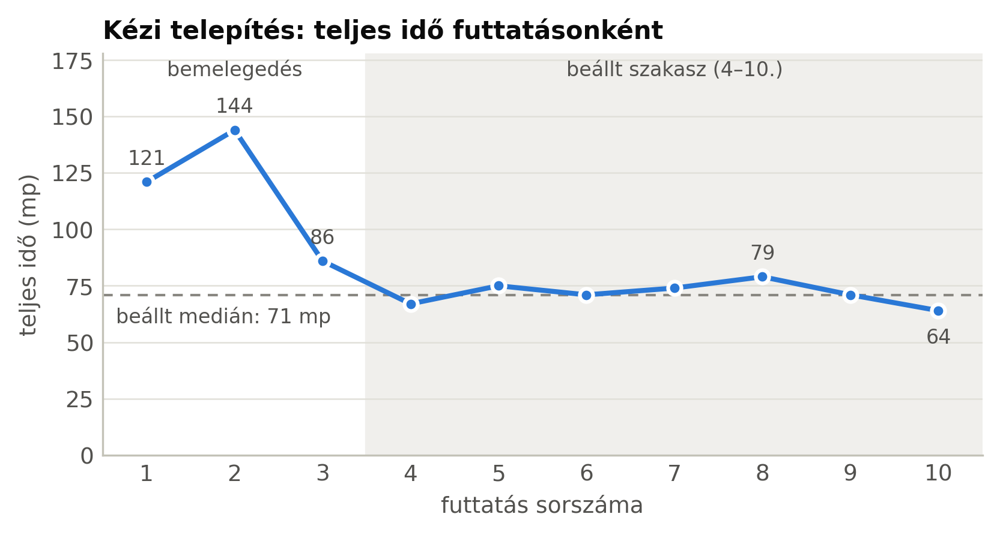
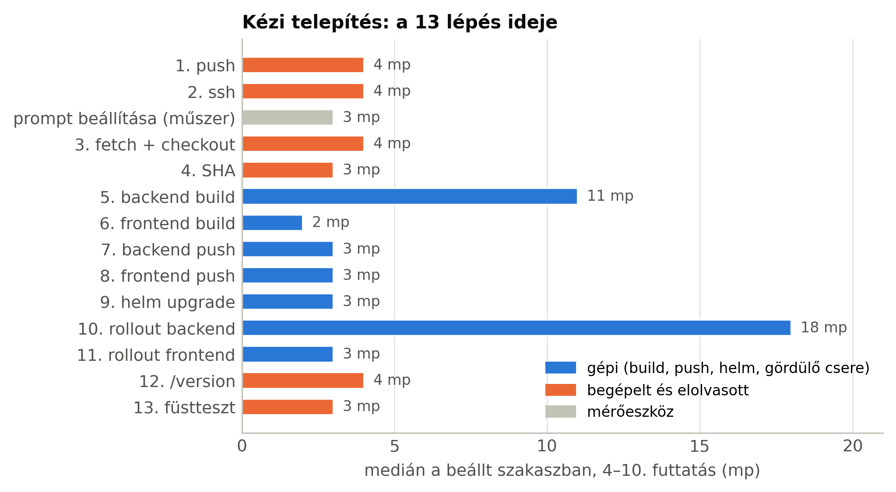
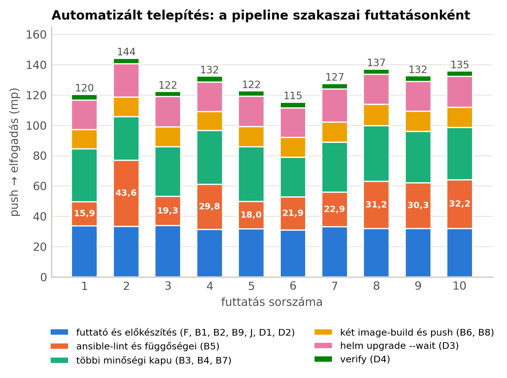
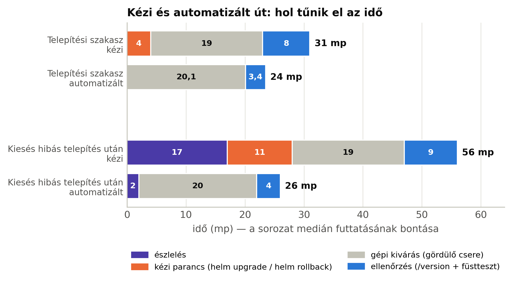

11. tananyag · scripts/abrak-6-fejezet.py · a dolgozat 6.2–6.4 alfejezete
Négy ábra, mind egy scriptből, közvetlenül a bizonyitek/meres/ fájljaiból. Itt az áll, mit mutat mindegyik, mit nem állít, és mit kérdezhet róla a bíráló.
A dolgozat minden száma a CSV-kből és a lépésidő-táblákból jön. Ha az ábra kézzel készülne, két forrás lenne ugyanarra a számra, és előbb-utóbb eltérnének — a 2026-09-30-i javításoknál pont ez történt a szövegben. A script ráadásul ellenőriz: ha a lépések összege nem egyezik a CSV teljes idejével, megáll, és nem rajzol hibás ábrát. Újragenerálás: python3 scripts/abrak-6-fejezet.py.
Ha minden szakasznak külön veszed a mediánját és összeadod, nem a teljes idő mediánját kapod. A kézi kiesésnél például a szakaszmediánok összege 53 mp, a kiesés mediánja viszont 56. Egy olyan oszlop, amelynek a hossza nem egyezik a ráírt számmal, az első kérdés lenne a védésen. Ezért a bontás annak a futtatásnak a valódi szakaszait mutatja, amelynek a teljes ideje a medián.

6.1 — a kézi sorozat tanulási görbéje. Az első három futtatás lassú (121, 144, 86 mp), utána a sor 64–79 mp között áll be. Amit nem állít: hogy ez csak tanulás. A backend build 35 → 11 mp-re esése a réteg-gyorsítótár bemelegedése, gépi ok — a szövegben ezt külön ki kell mondani.

6.2 — a 13 lépés. Két hosszú tétel van, és mindkettő gépi: a gördülő csere kivárása (18 mp) és a backend build (11 mp). A begépelt és elolvasott lépések egyenként 3–4 mp-esek, de hatan vannak. A vázlatban halmozott oszlop szerepelt; lépésenkénti vízszintes sáv lett belőle, mert 14 szelet egy oszlopban olvashatatlan. Megjegyzés: a lépésmediánok összege itt sem pontosan 71 mp — ez az ábra lépéseket hasonlít össze egymással, nem a teljes időt bontja.

6.3 — a pipeline szakaszai. Minden szakasz futtatásról futtatásra szinte azonos, egy kivételével: a narancs ansible-lint (B5) 15,9 és 43,6 mp között mozog. A teljes idő szórását tehát egyetlen gyorsítótárazatlan függőségtelepítés adja, nem a módszer — ez a 7. fejezet egyik pontja.

6.4 — a fő ábra. A szürke (gépi kivárás) mind a négy oszlopban 19–20 mp: ezen az automatizálás nem gyorsít. Ami eltűnik, az a narancs (kézi parancs) és a lila (észlelés, 17 → 2 mp), és a kék ellenőrzés is rövidebb. Amit nem állít: hogy az automatizált út összességében gyorsabb — a teljes idő a kapuk miatt hosszabb (6.3). Az automatizált telepítési oszlop szakaszai tizedes logidőkből 23,5 mp-et adnak, a ráírt 24 mp a CSV egész másodperces értéke.